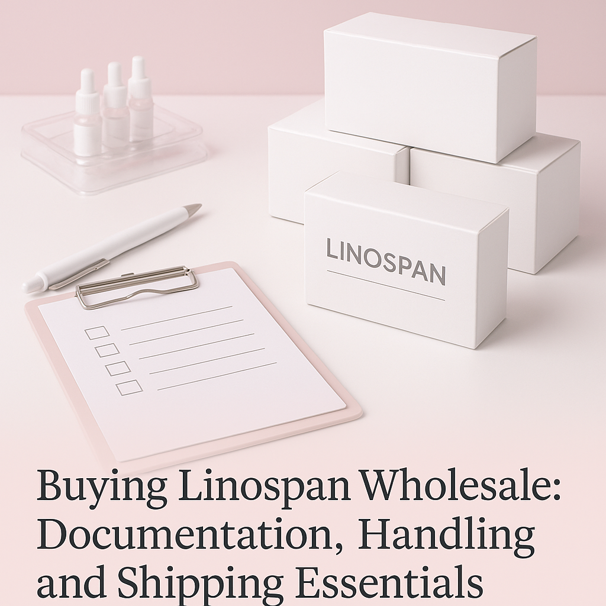
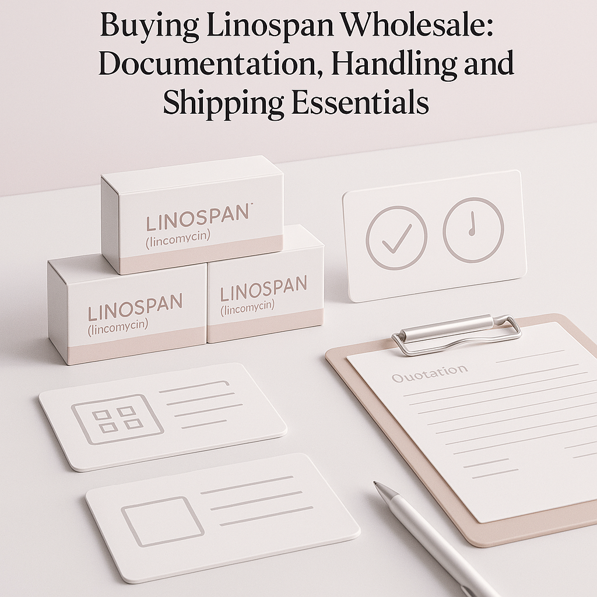

This guide covers everything you need to know about buying Linospan wholesale, from sourcing to shipping essentials.
For professional buyers in the dental supply industry, sourcing Linospan wholesale can present a variety of challenges. From understanding documentation requirements to ensuring proper handling and shipping, navigating the wholesale landscape requires careful attention to detail. This guide aims to equip you with the essential knowledge needed to make informed purchasing decisions.
Why does this matter? The right approach to wholesale Linospan sourcing not only ensures compliance with regulations but also enhances your operational efficiency. Whether you're a clinic, spa, reseller, or distributor, understanding these fundamentals can significantly impact your bottom line.
Key Takeaways
- Understand the necessary documentation for importing Linospan to avoid delays.
- Evaluate suppliers based on their communication and reliability.
- Plan your orders around your business's minimum order quantity (MOQ) and reorder needs.
- Ensure proper packing to maintain product integrity during shipping.
- Be aware of destination-specific shipping requirements to prevent complications.
What this guide covers
- Understanding Linospan
- Buyer scenarios
- Comparison criteria
- Checklist before requesting a quote
- Shipping, packing, and documentation
- MOQ and reorder planning
- Frequently asked questions
What buyers should understand first

Linospan is a widely used product in dental practices, known for its effectiveness in various applications. As a professional buyer, it's crucial to grasp the product's specifications and intended use without delving into treatment protocols. Understanding the product's characteristics will help you make informed decisions when sourcing from wholesale suppliers. Linospan is typically utilized for its unique properties that aid in dental procedures, making it essential for clinics and practices that prioritize quality and reliability.
Which buyers is this most relevant for?
This guide is particularly relevant for clinics, spas, resellers, and distributors who require Linospan for their operations. Each buyer scenario may have different order planning needs; for example, a clinic may require a steady supply for patient treatments, while a reseller might focus on bulk purchasing to meet customer demand. Understanding these nuances will help you evaluate your sourcing strategy effectively. Additionally, distributors may need to consider storage capabilities and shelf life when planning their orders to ensure they can meet their clients' needs without excess inventory.
How to compare options before ordering
When comparing wholesale Linospan options, consider the following criteria:
- Product Type: Ensure you are sourcing the correct variant of Linospan that meets your needs. Different formulations may be available, so confirm the specifications.
- Brand: Research the brand's reputation and reliability in the market. Established brands may offer better quality assurance.
- Packaging: Look for suppliers that offer secure and appropriate packaging to prevent damage. Packaging should also comply with regulatory standards.
- Batch/Expiry Visibility: Confirm that the supplier provides clear information on batch numbers and expiry dates to ensure product freshness.
- Supplier Communication: Evaluate the supplier's responsiveness and willingness to provide necessary information. Good communication can prevent issues down the line.
- Destination Requirements: Understand any specific shipping regulations that may apply to your location, including customs documentation and import restrictions.
Buyer checklist before requesting a quote

- Define your required quantities and variants of Linospan.
- Confirm your business's minimum order quantity (MOQ) needs.
- Gather documentation required for importation, including any necessary permits.
- Prepare a list of preferred suppliers based on reliability and communication.
- Check your shipping and handling preferences, including preferred carriers.
- Review local regulations regarding dental supplies and ensure compliance.
- Establish a budget for your purchase to facilitate negotiations with suppliers.
Shipping, packing and documentation questions
Logistics can be a complex aspect of sourcing Linospan wholesale. Here are some common questions to consider:
- What are the shipping options available, and how do they affect delivery times?
- What packing materials are used to ensure product safety during transit? Look for suppliers that use protective materials to minimize damage.
- What documentation is required for customs clearance? This often includes commercial invoices and packing lists.
- How can I track my shipment once it has been dispatched? Ensure the supplier provides tracking information.
- What should I do if there are issues with delivery? Have a plan in place to address delays or lost shipments with your supplier.
MOQ, quotation and reorder planning
When preparing for your order, it's essential to consider your minimum order quantity (MOQ) and how it aligns with your business needs. Determine the quantities of Linospan you will require based on your sales forecasts and patient needs. Additionally, plan for reorder quantities to avoid stockouts. SOLA can assist you in confirming current availability and providing a wholesale quotation tailored to your requirements. Keeping an organized inventory management system can help streamline this process and ensure timely reordering.
FAQ
What documentation do I need for importing Linospan?
You typically need commercial invoices, packing lists, and any specific import permits required by local authorities.
How can I ensure the quality of Linospan from a supplier?
Request samples, check reviews, and verify the supplier's certifications and quality control processes.
What should I do if I receive damaged products?
Contact your supplier immediately to report the issue and discuss potential resolutions, such as replacements or refunds.
Can I negotiate prices with suppliers?
Yes, many suppliers are open to negotiation, especially for larger orders or long-term partnerships.
How often should I reorder Linospan?
This depends on your usage rate; monitor your inventory levels and plan reorders accordingly to maintain a consistent supply.
Contact SOLA for wholesale quotation via WhatsApp.
Planning a wholesale request?
Send product names, quantities and destination for a tailored discussion.
Contact SOLA on WhatsApp →General educational content for professional buyers. Not medical, legal, regulatory or import advice.